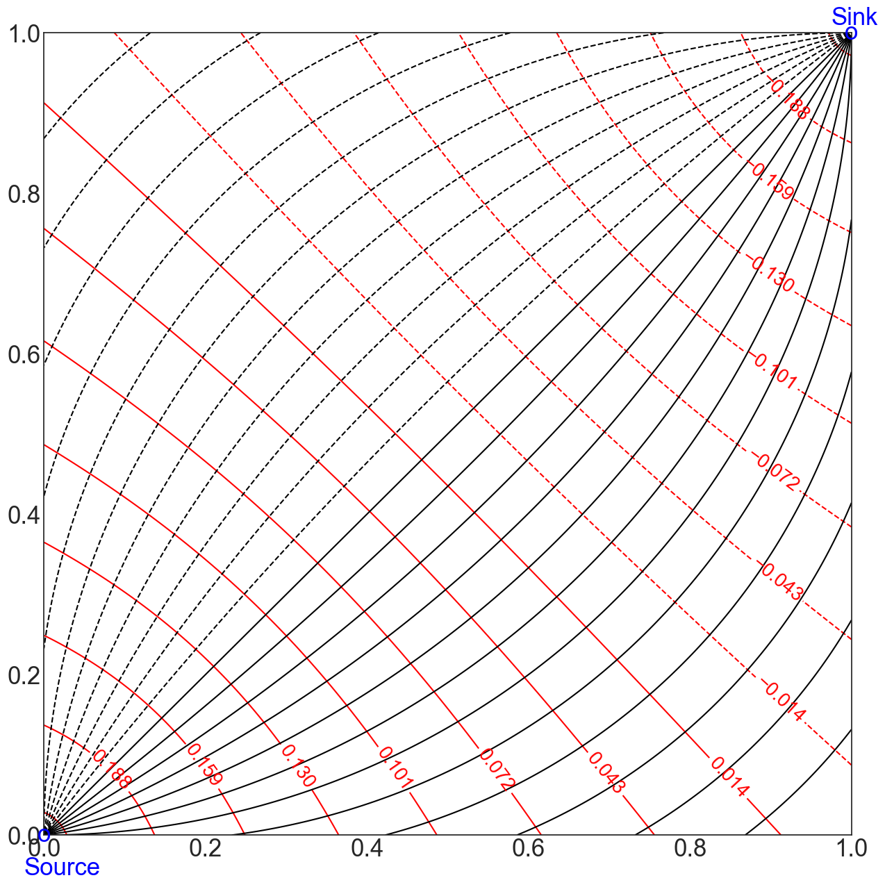

Complex Potentials#
Introduction
In this Notebook, we model 2-dimensional incompressible flow in various settings using the complex potential $\Omega=\Phi(x,y)+i\Psi(x,y)$, where $\Phi(x,y)$ is the velocity potential ($\vec{V}=-\nabla \Phi$) and $\Psi$ is the stream function. The equipotentials are the level curves for the velocity potential: $\Phi(x,y)=$ constant. The streamlines for the flow are the level curves for the stream function: $\Psi(x,y)=constant$.We assume throughout that unless stated otherwise,
- our domain is the square with vertices (1,1),(-1,1),(-1,-1), and (1,-1).
- if there are no transformations of the plane, obstructions to the flow, or singularities such as sources or sinks, flow is in the horizontal direction.
We beginn by importing all the Python libraries which are needed to run this Notebook.
%matplotlib inline
import matplotlib.pyplot as plt #used for plots
plt.style.use('seaborn-white')
import numpy as np #used for numerical computation
import cmath as cm #used for complex arithmetic
/var/folders/51/0j13g6f16lq97y1j31tmp7b40000gn/T/ipykernel_18690/4288837579.py:3: MatplotlibDeprecationWarning: The seaborn styles shipped by Matplotlib are deprecated since 3.6, as they no longer correspond to the styles shipped by seaborn. However, they will remain available as 'seaborn-v0_8-<style>'. Alternatively, directly use the seaborn API instead.
plt.style.use('seaborn-white')
1. Uniform Flow
Uniform flow means flow is in one direction (eg. in the $x$ direction with the cross-sectional area $A$ created by a depth h is constant). The flow rate $q_u$ ($\frac{m^3}{s}$) and fluid velocity $V_x=q_u/A$ are constant at all points. In this case, Darcy's Law becomes\begin{equation} V_x=\frac{q_u}{A} =-\frac{d\Phi}{dx}. \end{equation}
Integrating, we get \begin{equation} \Phi(x)= -\frac{q_u}{A} x + \Phi_0. \end{equation} For example, set \(-\frac{q_u}{A}=1\) and \(\Phi_0=0\). Since \(\psi_y(x,y)=\Phi_x=-1\), we let \(\psi(x,y)=-y\) and so the complex potential is \(\Omega(x,y)=-x-iy\) or \(\Omega(z)=-z\).
# create figure and axes
fig=plt.figure(figsize=(10,5))
plt.xlim=(-1,2)
plt.ylim=(-1,2)
# Set up Plot Grid
x = np.linspace(-1, 1, 250)
y = np.linspace(-1, 1, 250)
X, Y = np.meshgrid(x, y)
#Plot the equipotential lines
ax1 = fig.add_subplot(121)
ax1.set_title('Equipotentials',size=35)
plt.gca().tick_params(labelsize=25)
Z = -X
contours=plt.gca().contour(X, Y, Z, levels=np.linspace(-1,1,9), colors='red');
plt.gca().clabel(contours, inline=True, fontsize=25)
#Plot the streamlines
ax2 = fig.add_subplot(122)
ax2.set_title('Streamlines',size=35)
plt.gca().tick_params(labelsize=25)
Z = -Y
contours=plt.contour(X, Y, Z, levels=np.linspace(-1,1,9), colors='black');
plt.gca().clabel(contours, inline=True, fontsize=25)
plt.savefig('UniformFlow.png')
2. Source at (0,0)
A source at (0,0) can be modelled by the complex potential $\Omega(z)=log(z)=ln(|z|) + i arg(z)$ where $-\pi < arg(z)\le \pi$.In this case the velocity potential is
\(\Phi(z)= \ln \mid z\mid=\sqrt{x^2+y^2}\)
and the stream function is
\(\Psi(z)=arg(z)=\arctan(y/x)\)
# create figure and axes
fig=plt.figure(figsize=(10,5))
plt.xlim=(-1,2)
plt.ylim=(-1,2)
# Set up Plot Grid
x = np.linspace(-1, 1, 250)
y = np.linspace(-1, 1, 250)
X, Y = np.meshgrid(x, y)
#Plot the equipotential lines
ax1 = fig.add_subplot(121)
ax1.set_title('Equipotentials',size=35)
plt.gca().tick_params(labelsize=25)
Z = np.sqrt(X**2+Y**2)
contours=plt.gca().contour(X, Y, Z, levels=np.linspace(0,1,9), colors='red');
plt.gca().clabel(contours, inline=True, fontsize=25)
#Plot the streamlines
ax2 = fig.add_subplot(122)
ax2.set_title('Streamlines',size=35)
plt.gca().tick_params(labelsize=25)
Z = np.arctan2(Y,X)
contours=plt.contour(X, Y, Z, levels=np.linspace(-np.pi,np.pi,9), colors='black');
plt.gca().clabel(contours, inline=True, fontsize=25)
plt.savefig('Source.png')

3. Five-Spot Pattern
A) In the 5 point pattern we will surround the source with 4 equal strength sinks ($q_w/h=1$) at the four corners of the domain ((1,1),(-1,1),(-1,1),(1,-1)). In this case,- the complex potential is
\(\Omega(z) =\frac{-1}{2\pi}[\log(z)-\log(z-(1+i))-\log(z-(1-i))-\log(z-(-1-i))-\log(z-(1-i))\)]
- the velocity potential is
\( \Phi(z)= \frac{-1}{2\pi}[\ln(\sqrt{x^2+y^2})-\ln(\sqrt{(x-1)^2+(y-1)^2})-\ln(\sqrt{(x-1)^2+(y+1)^2})-\ln(\sqrt{(x+1)^2+(y+1)^2})-\ln(\sqrt{(x-1)^2+(y+1)^2})]\)
- the stream function is
\( \Psi(z)= \frac{-1}{2\pi}[\arctan\frac{y}{x}-\arctan\frac{y-1}{x-1}-\arctan\frac{y+1}{x-1}-\arctan\frac{y+1}{x+1}-\arctan\frac{y+1}{x-1}]\)
B) Consider next the terms in the potential for one quarter of a 5-spot pattern which includes just the source at (0,0) and a sink at (1,1):
\(\Omega(z) =\frac{-1}{2\pi}[\log(z)-\log(z-(1+i))\)]
In this case, the velocity potential is given by
\(\Phi(x,y) =\frac{-1}{2\pi}[\sqrt{x^2+y^2}-\sqrt{(x-1)^2+(y-1)^2}]\).
The stream function, which accounts for the choice of branch cuts (negative x-axis at the branch point (0,0) and in the direction of the positive x-axis at the branch point (1,1), can be evaluated as
\( \Psi(x,y)= \frac{-1}{2\pi}[\pi+\arctan(\frac{y}{x})]+\frac{1}{2\pi}[2\pi-\arccos(\frac{X-1}{\sqrt{(X-1)^2+(Y-1)^2}})]\)
# create figure and axes fig=plt.figure(figsize=(15,15)) plt.xlim=(0,1) plt.ylim=(0,1) # Set up Plot Grid x = np.linspace(0, 1, 250) y = np.linspace(0, 1, 250) X, Y = np.meshgrid(x, y) plt.gca().tick_params(labelsize=25) Z = (-1/(2*np.pi))*np.sqrt(X**2+Y**2)+(1/(2*np.pi))*np.sqrt((X-1)**2+(Y-1)**2) contours=plt.gca().contour(X, Y, Z, levels=np.linspace(-1,1,70), colors='red'); plt.gca().clabel(contours, inline=True, fontsize=20) Z1 = (-1/(2*np.pi))*(np.pi+np.arctan2(Y,X))+(1/(2*np.pi))*(2*np.pi-np.arccos((X-1)/np.sqrt((X-1)**2+(Y-1)**2))) contours1=plt.contour(X, Y, Z1, levels=np.linspace(-.25,.25,25), colors='black'); #plt.gca().clabel(contours1, inline=True, fontsize=25,color='red') plt.gca().text(-.025,-.05,'Source',size=25,color='b') plt.gca().text(0,0,'o',size=25,color='b',ha='center',va='center') plt.gca().text(.975,1.01,'Sink',size=25,color='b') plt.gca().text(1,1,'o',size=25,color='b',ha='center',va='center') plt.savefig('QuarterFiveSpot.png')
/var/folders/51/0j13g6f16lq97y1j31tmp7b40000gn/T/ipykernel_18690/3572428666.py:14: RuntimeWarning: invalid value encountered in divide Z1 = (-1/(2*np.pi))*(np.pi+np.arctan2(Y,X))+(1/(2*np.pi))*(2*np.pi-np.arccos((X-1)/np.sqrt((X-1)**2+(Y-1)**2)))